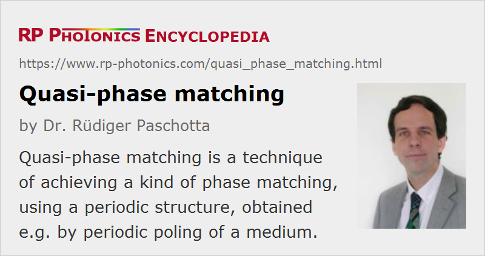

Quasi-phase Matching
Acronym: QPM
Definition: a technique of achieving a kind of phase matching, using a periodic structure
More general term: phase matching
German: Quasi-Phasenanpassung
Categories: nonlinear optics, methods
How to cite the article; suggest additional literature
Author: Dr. Rüdiger Paschotta
Quasi-phase matching is a technique for achieving similar results to those with phase matching of nonlinear interactions, in particular for nonlinear frequency conversion. Instead of a homogeneous nonlinear crystal material, a material with spatially modulated nonlinear properties is used. The idea is essentially to allow for a phase mismatch over some propagation distance, but to reverse (or disrupt) the nonlinear interaction at positions where otherwise the interaction would take place with the wrong direction of conversion. In contrast to birefringent phase matching, it is not necessary to have different polarization states of the involved waves; in fact, it is most common to have equal polarization states. (The term “type-0 phase matching” is sometimes used.)
Figure 1 illustrates with the green arrows the complex amplitude contributions from different parts of the nonlinear crystal to the harmonic wave in a frequency doubler. In the case without phase matching, these contributions cannot constructively add up over a significant distance in the crystal. With quasi-phase matching, the sign of the contributions is reversed at a point where they would otherwise diminish the total amplitude. (That is the case after propagation over one so-called coherence length.) In that way, the total amplitude can grow more and more, although not as quickly as it could for real phase matching.
Compared with the perfectly phase-matched case, QPM leads to a lower conversion efficiency if the nonlinear coefficient is the same: the effective nonlinear coefficient deff is reduced by a factor of 2 / π. However, QPM often makes it possible to use the same polarization direction for all interacting waves, and this often corresponds to using a stronger element of the nonlinear tensor. In effect, the conversion efficiency can be significantly higher than for true phase matching. As an example, consider lithium niobate (LiNbO3), where birefringent phase matching usually utilizes the coefficient d31 = 4.35 pm/V, whereas QPM normally uses the higher d33 = 27 pm/V, which effectively results in 17 pm/V taking into account the above-mentioned factor of 2 / π. As the conversion efficiency is usually proportional to the square of the nonlinear coefficient (in the low-conversion regime), the use of d33 results in significant advances in cases where very high optical intensities cannot be used, e.g. due to a limited pump power. QPM is now widely used for frequency doubling (e.g. in green and blue laser sources), and for parametric devices such as optical parametric oscillators.
QPM opens many attractive possibilities. In principle it allows for efficient nonlinear interactions with arbitrarily high “natural” phase mismatch, although a large phase mismatch may lead to impractically small poling periods. Typically, the propagation direction is along a crystal axis (noncritical phase matching), so that spatial walk-off is avoided, and the acceptance angle is large. Further, the quasi-phase matching period can be adjusted in order to obtain a convenient phase-matching temperature. Operation at or near room temperature is therefore often possible without resorting to critical phase matching or noncollinear phase matching. Such options are also important for nonlinear interactions in waveguides, where noncollinear beams and interactions with spatial walk-off usually cannot be used.
Note that it is possible to arrange for multiple quasi-phase-matched nonlinear interactions in a single crystal. This can be achieved e.g. by using periodically poled crystals with multiple poling periods, or by exploiting different orders of phase matching within a single poled structure. (When the duty cycle deviates from 50%, even-order processes also become possible.) Such multiple interactions can be interesting e.g. for realizing compact RGB sources, but they can also occur unintentionally and lead to various parasitic processes.
In some cases, parasitic higher-order processes can be disturbing. For example, relatively strong green light can result from parasitic second-harmonic generation in parametric oscillators and generators made of lithium niobate or lithium tantalate which are pumped in the 1-μm spectral region. This can be detrimental particularly in the context of green-induced infrared absorption (→ photodarkening). On the other hand, weak visible parasitic beams can be helpful for the alignment of such devices.
As a historical note, QPM was invented already in 1962 [1], but could not be used at that time because suitable fabrication techniques (see below) had not then been developed. Therefore, birefringent phase matching was for a long time the only used technique. In the 1980s, however, QPM started to be used more and more extensively. The key for this was the development of advanced techniques for periodic poling.
Overview on Benefits and Problems
In short, the possible benefits of QPM are:
- It can work with a very wide range of nonlinear interactions (even in crystals which have e.g. too weak birefringence for birefringent phase matching), and this at a convenient temperature and without spatial walk-off.
- As the method of periodic poling can be applied exactly to crystal materials with particularly high nonlinearity, and QPM also often makes it possible to utilize a larger nonlinear coefficient than is accessible with birefringent phase matching, many nonlinear conversion processes can be made very efficient.
- Periodically poled crystals may have a reduced tendency for photorefractive problems, if effects in differently oriented domains cancel each other.
Limitations are:
- The fabrication of periodically poled crystals (see below) with high and reliably confirmed quality is challenging, and is possible only with certain crystal materials. The details and success rates of the required procedures depend strongly on material details – not only material type, but also defect density, stoichiometry, surface treatment and the like.
- Periodic poling can be applied only to crystals with fairly limited thickness, which excludes large aperture devices for very high power levels.
- For different processes, many different poling periods are required. This makes it less likely that a manufacturer can have the required crystal in stock. Even if the required period is in principle not problematic, a new value may require an expensive new lithographic mask. Note also that precise refractive index (Sellmeier) data are required for accurate predictions of the required poling period.
- Parasitic higher-order processes can generate light at additional wavelengths, which can be disturbing in various ways.
Pulse Shaping and Compression with Chirped QPM Crystals
An extension of quasi-phase matching involves slightly non-periodic (nonuniform) poling of the nonlinear material. When the poling is done with a lithographic mask, the non-periodic poling is not more difficult to achieve than exactly periodic poling.
When a chirped QPM crystal is used for nonlinear frequency conversion, the temporal shape of the converted and/or the unconverted pulse can be modified substantially. For suitably designed chirped structures, pulses with tailored temporal shapes can be obtained.
A particular case of a non-periodic structure is a “chirped” structure, where the poling period varies monotonically along the beam direction. A possible application of such chirped QPM structures is a special method of pulse compression [4], to be used e.g. in the context of chirped-pulse amplification. Here, a strongly chirped pulse is frequency-converted such that the resulting pulse is not chirped and thus much shorter. Such nonlinear compressors can handle high pulse energies, but are unfortunately fairly limited in terms of the maximum input pulse duration.
Fabrication of Quasi-phase-matched Nonlinear Crystals
The most popular technique for generating quasi-phase-matched crystals is periodic poling of ferroelectric nonlinear crystal materials such as lithium niobate (LiNbO3), lithium tantalate (LiTaO3) and potassium titanyl phosphate (KTP, KTiOPO4) by ferroelectric domain engineering. Here, a strong electric field is applied to the crystal for some time, using microstructured electrodes, so that the crystal orientation and thus the sign of the nonlinear coefficient are permanently reversed only below the electrode fingers. The poling period (the period of the electrode pattern) determines the wavelengths for which certain nonlinear processes can be quasi-phase-matched. Typical poling periods are between 5 and 50 μm. See the article on periodic poling for more details.
More recently, interesting work has been done on QPM in orientation-patterned gallium arsenide (OP-GaAs). This material has a very high nonlinear coefficient and a wide transparency range of 0.9–17 μm, making it very attractive e.g. for optical parametric oscillators emitting in the mid-infrared spectral range [6]. There are several different techniques for fabricating such materials – see the article on orientation-patterned semiconductors.
Suppliers
The RP Photonics Buyer's Guide contains 8 suppliers for periodically poled nonlinear crystals. Among them:
Questions and Comments from Users
Here you can submit questions and comments. As far as they get accepted by the author, they will appear above this paragraph together with the author’s answer. The author will decide on acceptance based on certain criteria. Essentially, the issue must be of sufficiently broad interest.
Please do not enter personal data here; we would otherwise delete it soon. (See also our privacy declaration.) If you wish to receive personal feedback or consultancy from the author, please contact him e.g. via e-mail.
By submitting the information, you give your consent to the potential publication of your inputs on our website according to our rules. (If you later retract your consent, we will delete those inputs.) As your inputs are first reviewed by the author, they may be published with some delay.
Bibliography
| [1] | J. A. Armstrong, “Interactions between light waves in a nonlinear dielectric”, Phys. Rev. 127 (6), 1918 (1962), doi:10.1103/PhysRev.127.1918 |
| [2] | L. Gordon et al., “Diffusion-bonded stacked GaAs for quasiphase-matched second-harmonic generation of a carbon dioxide laser”, Electron. Lett. 29 (22), 1942 (1993), doi:10.1049/el:19931293 |
| [3] | M. J. Angell et al., “Growth of alternating <100>/<111>-oriented II-VI regions for quasi-phase-matched nonlinear optical devices on GaAs substrates”, Appl. Phys. Lett. 64, 3107 (1994), doi:10.1063/1.111362 |
| [4] | A. Galvanauskas et al., “Chirped-pulse-amplification circuits for fiber amplifiers, based on chirped-period quasi-phase-matching gratings”, Opt. Lett. 23 (21), 1695 (1998), doi:10.1364/OL.23.001695 |
| [5] | L. A. Eyres et al., “All-epitaxial fabrication of thick, orientation-patterned GaAs films for nonlinear optical frequency conversion”, Appl. Phys. Lett. 79 (7), 904 (2001), doi:10.1063/1.1389326 |
| [6] | K. L. Vodopyanov et al., “Optical parametric oscillation in quasi-phase-matched GaAs”, Opt. Lett. 29 (16), 1912 (2004), doi:10.1364/OL.29.001912 |
| [7] | C. Zhang et al., “Perfect quasi-phase matching for the third-harmonic generation using focused Gaussian beams”, Opt. Lett. 33 (7), 720 (2008), doi:10.1364/OL.33.000720 |
| [8] | M. Charbonneau-Lefort et al., “Optical parametric amplifiers using chirped quasi-phase-matching gratings I: practical design formulas”, J. Opt. Soc. Am. B 25 (4), 463 (2008), doi:10.1364/JOSAB.25.000463 |
| [9] | M. Charbonneau-Lefort et al., “Optical parametric amplifiers using nonuniform quasi-phase-matched gratings. II: Space–time evolution of light pulses”, J. Opt. Soc. Am. B 25 (5), 680 (2008), doi:10.1364/JOSAB.25.000680 |
| [10] | A. Tehranchi and R. Kashyap, “Engineered gratings for flat broadening of second-harmonic phase-matching bandwidth in MgO-doped lithium niobate waveguides”, Opt. Express 16 (23), 18970 (2008), doi:10.1364/OE.16.018970 |
| [11] | C. R. Phillips et al., “Apodization of chirped quasi-phasematching devices”, J. Opt. Soc. Am. B 30 (6), 1551 (2013), doi:10.1364/JOSAB.30.001551 |
See also: phase matching, birefringent phase matching, periodic poling, coherence length, nonlinear frequency conversion, orientation-patterned semiconductors
and other articles in the categories nonlinear optics, methods

This encyclopedia is authored by Dr. Rüdiger Paschotta, the founder and executive of RP Photonics Consulting GmbH. How about a tailored training course from this distinguished expert at your location? Contact RP Photonics to find out how his technical consulting services (e.g. product designs, problem solving, independent evaluations, training) and software could become very valuable for your business!
|  |
If you like this page, please share the link with your friends and colleagues, e.g. via social media:
These sharing buttons are implemented in a privacy-friendly way!